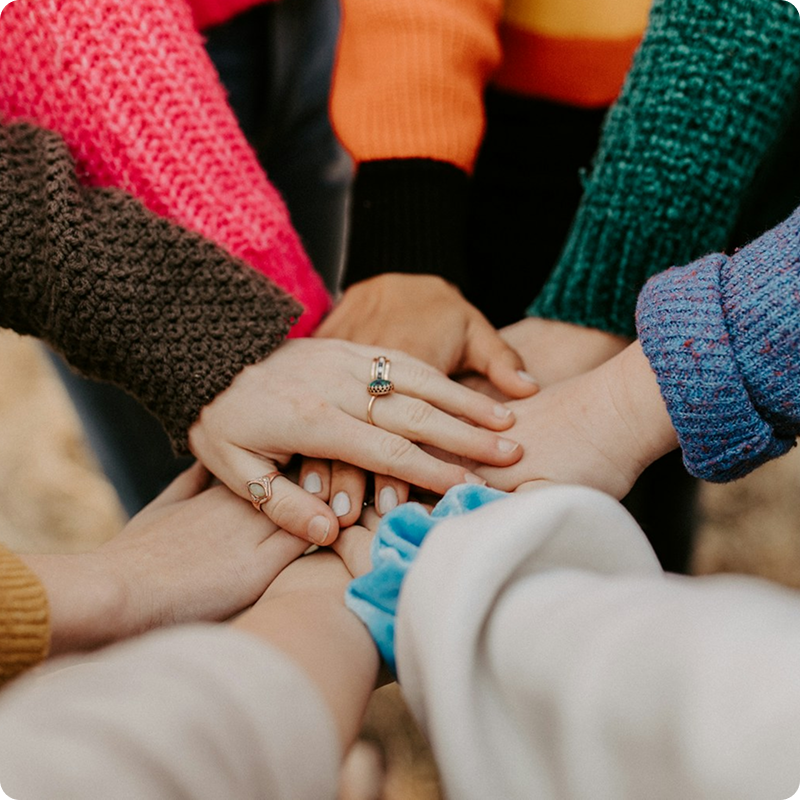
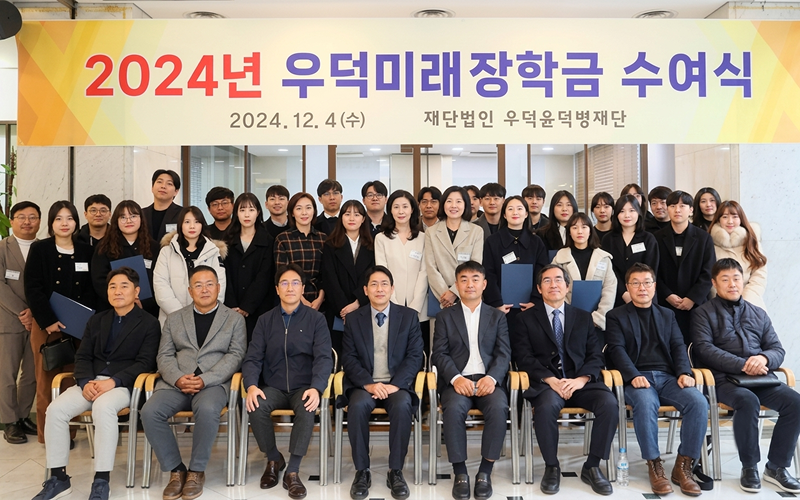
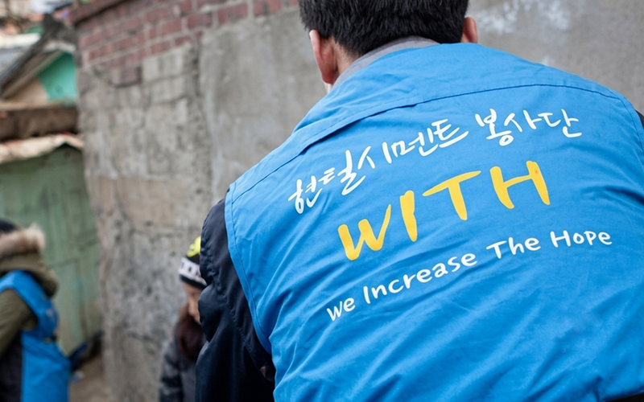

ESG경영
ESG경영
> ESG경영 > 나눔 경영
Sharing Management나눔 경영
사회를 든든하게, 이웃을 따뜻하게, 함께 짓는 행복한 내일
이웃과 함께하는 세상
나눔으로 행복한 세상을 꿈꿉니다.
산업보국과 인간존중의 경영이념은 한일시멘트가 반세기가 넘게 변함없이 추구하고 실천해온 철학입니다. 투명하고 건실한 기업활동으로 국가경제 발전에 이바지하며, 사회적 책임을 다하겠습니다.

1961년 창립 이래,
지역과 함께 성장해온 향토기업
추적 사업장이 있는 단양·영월 등지역에서는 지역 주민을 위한 실질적인 상생 활동을 꾸준히 이어오고 있습니다.
-
01
- 지역 주민 쌀 기부
- 단양·영월 등 시멘트 소재지 지역 주민 대상 정기적인 쌀 기부
-
02
- 노사합동 봉사활동
- 노동조합과 회사가 함께하는 정기 지역사회 봉사활동
-
03
- 지역 인재 장학금 지원
- 사업장 소재지 학생 대상 장학금 지원으로 지역 인재 양성

1963년 설립 · 40여 년의 역사
우덕재단
기업의 이윤을 사회에 환원하고자 설립된 우덕재단은, 창립 당시 '상천리재단'으로 시작하여 창립자의 호이자 단양공장 소재지 지명 '우덕리'를 1992년 지금의 이름으로 개칭했습니다. 한일의 창립이념과 함께 40여 년째 이어오며 공익활동의 든든한 축을 담당하고 있습니다.
- 우수 인재 양성을 위한 장학금 지원
- 사회 이익에 기여하는 연구활동 지원
- 사회복지단체 후원을 통한 복지국가 건설 기여
2011년 창단 · We Increase The Hope
봉사단 WITH
임직원과 가족으로 구성된 WITH 봉사단은 2011년 창단 이래 나눔경영 철학을 바탕으로 함께 사는 사회를 만들어가고 있습니다. 매월 정기 봉사활동은 물론 계절별 특색 봉사를 비롯해 다양한 나눔 프로그램을 실천 운영합니다.
- 독거어르신 벽지도배
- 나무 심기
- 농촌봉사 증진
- 한빛 캠페인
- 연탄 배달
- 농가일손 돕기
- 취약계층 집수리
- 수해지역 복구

RECENT CAMPAIGN
임직원 아이디어로 시작된 자원순환 기부,
'한일 그린나눔' 캠페인
-
183건
기부한 가전용품
-
493건
기부한 의류·생활용품
"이런 캠페인은 단순한 물품 기부가 아닌 작은 정성이 모아진 뜻깊은 활동이라고 생각합니다"
한일시멘트 관계자 · 소외이웃과 지역사회 발전에도 큰 보탬이 되길 희망
23
년 연속
한국에서 가장 존경받는 기업 — 시멘트 산업부문
한국능률협회컨설팅이 발표하는 '한국에서 가장 존경받는 기업' 산업별 시멘트 부문에서 23년 연속 명예의 전당에 등재되어 있습니다.